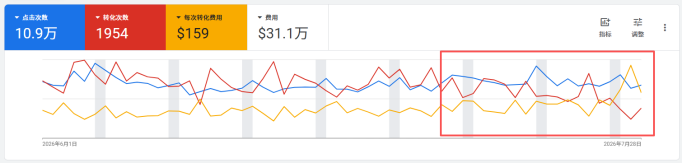

2026年7月 · 整体经营分析
经营月报｜数据口径：7月修正流量剔除 Amazon aref
核心结论
7月销售额下降，根因是订单量显著下降，而 AOV 保持稳定。
销售额下降← 订单量 −10.1%← Direct有效流量骤降＋ Amazon转化极低＋ Search转化恶化
订单下降贡献拆解：Direct（非Amazon）约36%｜Amazon aref约14%｜Search约50%
1 · 立刻核查投流质量
重点排查 Amazon 与 Search 的来源、关键词、受众、落地页和异常流量。
重点排查 Amazon 与 Search 的来源、关键词、受众、落地页和异常流量。
2 · 建立品牌与核心产品心智
从品牌内容、搜索需求、产品利益点、口碑与再营销多角度同步推进。
从品牌内容、搜索需求、产品利益点、口碑与再营销多角度同步推进。
01 · 经营概览
7月核心指标
商品销售总额$1,320,850环比 −6.0%
同比：暂无数据
净销售额$1,190,672环比 −7.8%
同比：暂无数据
订单数1,649环比 −10.1%
较6月减少186单
平均客单价$762环比 +4.4%
AOV总体稳定
复购率11.06%环比 −0.72pp
6月为11.78%
2026年月度销售额趋势
美元2026年月度订单与 AOV
订单｜美元02 · 原因拆分
三大渠道与 Amazon 流量转化
Direct（剔除aref）
57,046访客访客环比−47.2%
转化率0.98%（+0.30pp）
完成结账776（−10.6%）
订单下降贡献36%
Amazon（aref）
31,785访客跳出率88.7%
加购率0.22%
转化率0.09%
完成结账27
订单下降贡献14%
Search
78,520访客访客环比+11.3%
转化率0.59%（−0.19pp）
完成结账524（−17.9%）
订单下降贡献50%
Search渠道投放质量论证
原始图表｜数据区间：2026/6/1–7/28

简要结论：7月后段Search点击次数整体持平，但转化次数明显下降，导致单次转化费用上涨。问题不在点击规模，而在点击后的流量质量与落地页承接效率；应立即按搜索词、广告组、设备、地区和落地页核查低转化高成本流量。
Direct：页面类型流量承接
几乎全部下滑| 页面类型 | 6月会话 | 7月会话 | 变化 | 7月转化率 |
|---|---|---|---|---|
| Product | 66,176 | 48,040 | −27.4% | 0.83% |
| Blog Article | 31,377 | 6,656 | −78.8% | 0.00% |
| Collection | 12,352 | 8,893 | −28.0% | 0.72% |
| Homepage | 10,865 | 10,719 | −1.3% | 0.87% |
| Custom Page | 4,042 | 2,780 | −31.2% | 0.90% |
| Checkout | 476 | 290 | −39.1% | 29.31% |
结论：总会话下降37.8%，所有主要落地页与地区流量均下滑；Blog流量跌幅最大，Product页减少18,136次会话，是绝对损失主力。
Direct：TOP产品落地页
6月→7月完成结账Mathias流量仅下降9.2%且转化稳定；多数其他产品页流量显著下滑。应优先恢复高转化椅类产品的Direct流量，并复制Aero 72、Royal的承接方式。
Google Trends：品牌与核心产品搜索心智
心智建设方向
Mathias品牌词7月持续回落
Eureka Ergonomic7月降至低位
Libernovo Omni7月同步下降
建议：建立品牌词与核心产品词的内容矩阵；联动PR、测评、达人、YouTube/社媒内容和Search承接页，强化“品牌—产品—使用场景—购买理由”的一致表达。